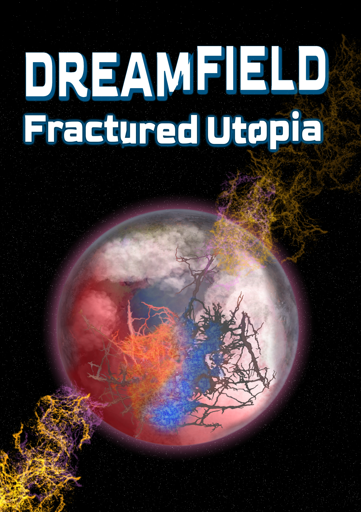
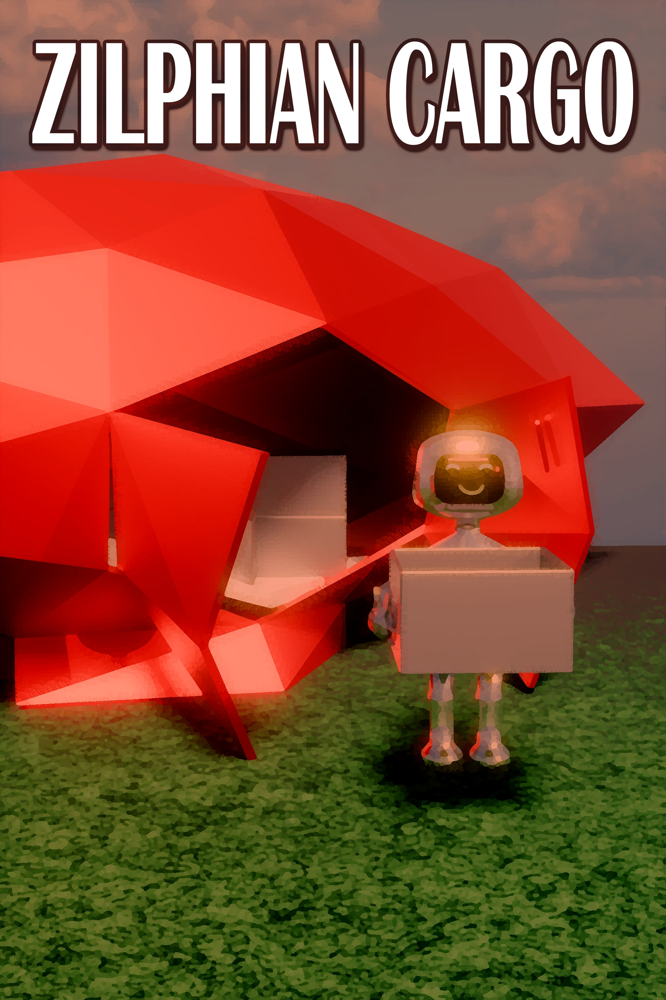

Dreamfield
Expected Release Time: Summer 2027. The inventor of an immersive alternate reality fears he must weaponize his creation in order to defeat the Lucians, a powerful species intent on destroy all individual culture in the galaxy. What he fails to consider, however, is the possibility that the Lucians could be weaponizing it against him. Estimated release date: summer 2027

The Space Guard Series
Though They be Vast
The first book in a series about an organization built by a galactic alliance to rescue various people throughout the galaxy. It follows Kenric, a man who was looking forwarded to starting a family, but now, must embark on the herculean task of rescuing giant rock creatures on a distance planet from a sun on the brink of a supernova. Estimated release date: Summer 2027

Uttermost Parts
Echoes of a Tin Planet
The first book in a series of mystery stories that take place on a remote mining planet. Talos, the inspector of Giphelsniak is investigating what happened to his missing wife. As he begins his research, he must investigate two women who went missing on Giphelsniak.

Zilphian Cargo
As inhabitants of the planet Zilph begin to explore the rest of the galaxy, some begin to capitalize on the newly formed relationships by exporting Zilph's rare metals and unique fruitage. One such exporter stumbles upon evidence that Zilph may have made contact with other civilizations long before they should have, but no one believes him.